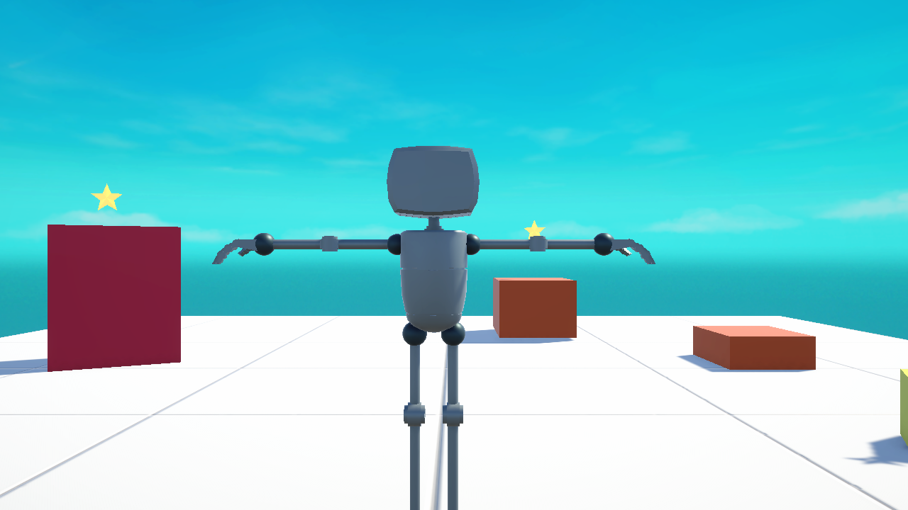
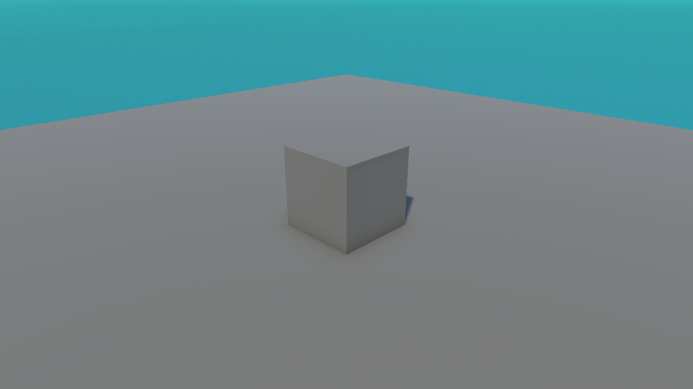

🚀 Lesson 1.1: What Is Unity & What You'll Build
Welcome! Before we touch a single button, let's answer the big questions: What is Unity? What's a "game engine"? And what will you actually have made by the end of this course?
🎯 Learning Objectives
By the end of this lesson, you will be able to:
- Explain in plain words what a game engine is and what Unity does for you
- Describe the kinds of things people build with Unity
- Understand the small game you'll build in this course and the path to get there
- Set the right expectations for learning — including the coding part
Estimated Time: 20 minutes
You'll need: Nothing but curiosity. No software yet — we install Unity next lesson.
In This Lesson
What Is a Game Engine?
Imagine you want to build a video game. You'd need a way to draw 3D shapes on screen, make them fall with gravity, detect when two things bump into each other, play sounds, read the keyboard, show a score, and package it all into something people can run. Writing every one of those systems from scratch would take years.
A game engine is a big toolbox that already contains all of those systems. You get graphics, physics, audio, input, and much more — pre-built and ready. Your job shifts from "invent everything" to "arrange and direct these tools to make your game." That's a huge head start.
📖 Definition
Game engine: a software framework that provides the common building blocks of games — rendering, physics, audio, input, and more — so creators can focus on designing their game instead of rebuilding the basics.
So, What Is Unity?
Unity is one of the most popular game engines in the world. A large share of the mobile games on your phone were made with it, along with countless PC and console games, plus experiences in film, architecture, car design, and training simulations.
People choose Unity because it is:
- Beginner-friendly — a visual editor lets you build a lot by dragging, clicking, and typing values, not just code.
- Free to start — the Personal plan is free for individuals and small teams.
- Cross-platform — build once, then export to Windows, Mac, the web, phones, and consoles.
- Well-documented — enormous community, tutorials, and official docs when you get stuck.
Unity has two halves that work together, and you'll use both throughout this course:
| The Editor | C# Scripting |
|---|---|
| The visual workspace where you place objects, set up scenes, and press Play. You met it in the tour (Lesson 1.3). | The code you write to give objects behaviour — move, shoot, score, react. We start this in Module 3, gently. |
What You'll Build
Throughout this course you'll build a small but complete game: a character on a floor, collectible items to gather, a score on screen, sound effects, and a win condition — the kind of "collect-the-items" game that teaches every core skill you need. Here's a real frame from the example project we'll learn from:

You'll also create your very first scene from scratch — as simple as a single cube on the ground — and grow your skills from there:

💡 Small on purpose. We deliberately keep the game small. A finished small game teaches you far more than an ambitious project you never complete. Once you've shipped one, bigger ideas become "just more of the same."
Your Learning Path
Here's the journey, module by module. Each step builds on the one before:
install & find your way around] --> B[2 · GameObjects & Components
build scenes] B --> C[3 · C# Scripting
make things behave] C --> D[4 · Input & Control
move a player] D --> E[5 · Physics & Collisions
gravity & pickups] E --> F[6 · UI & Feedback
score, sound] F --> G[7 · Mini-Game Project
put it together] G --> H[8 · Build & Share
ship your game]
You are here: the very beginning of Module 1. By the end you'll have travelled the whole path and built a real game.
The Right Mindset
✅ What helps
- Do, don't just read. Open Unity and try each step yourself. Muscle memory beats theory.
- Expect to be confused sometimes. That's normal and temporary — every developer has felt it.
- Small experiments. Change a number, press Play, see what happens. Unity is safe to poke.
⚠️ What to avoid
- Don't rush to a dream game. Finish the fundamentals first — they're the foundation everything else sits on.
- Don't fear the code. We introduce C# slowly, one small idea at a time. You do not need prior programming.
Summary
🎉 Key Takeaways
- A game engine is a toolbox of ready-made game systems (graphics, physics, audio, input).
- Unity is a popular, beginner-friendly, free-to-start, cross-platform engine.
- Unity has two halves: the visual Editor and C# scripting.
- You'll build a small, complete collect-the-items game — starting from a single cube.
🎯 Quick Quiz
Question 1: What is the main benefit of using a game engine like Unity?
Question 2: Which two halves of Unity will you use in this course?
🚀 What's Next?
Time to get Unity onto your computer. In Lesson 1.2 we'll install Unity Hub and Unity 6, step by step.
🎉 You're off!
You now know what Unity is and where you're headed. Let's get it installed.